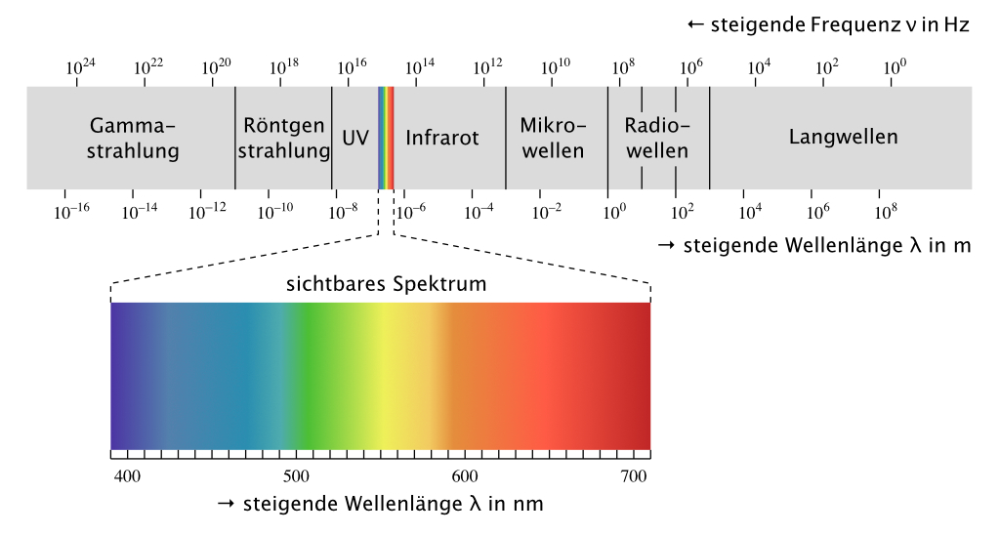

Bluetooth LE
Der micro:bit kann, wie ein Mobiltelefon auch, Daten per Funk übertragen. Dabei werden elektrische Signale in elektromagnetisch Wellen umgewandelt. Diese Wellen breiten sich mit Lichtgeschwindigkeit, ca 300'000 km/s aus. Funkwellen, Radiowellen, Mikrowellen, Infrarotstrahlung, sichtbares Licht, Röntgenstrahlung, usw. sind alles elektromagnetische Wellen. Der Unterschied liegt in der Frequenz bzw. der Wellenlänge, siehe Abb. 1.

Abb. 1 – Das Spektrum der elektromagnetischen Strahlung (Matt / Wikimedia Commons)
Der micro:bit verfügt über ein Bluetooth Low Energy-Modul (BLE), welches im 2.4-GHz-Bereich sendet. Die Wellenlänge dieser Funkwellen beträgt ca. 13 cm. Wegen des geringen Stromverbrauchs ist Sendestärke nur schwach. Bluetooth LE kann daher nur über kurze Distanzen bis zu zehn Metern übertragen. Der Datendurchsatz beträgt ungefähr 1 Mbit/s.

Abb. 2 – Bluetooth-Logo
Der Name Bluetooth ist von Harald Blauzahn abgeleitet, ein dänischer König des 10. Jh., der verfeindete Gruppen von Dänen und Norwegern vereinte. Es gibt viele Geräte, die miteinander über Bluetooth kommunizieren. Tastaturen, Computermäuse, Kopfhörer, usw.
In dem Programm von Abb. 3, wird beim Tastendruck A ein Text über Bluetooth versandt. Alle micro:bit, welche in der Gruppe 1 sind, können diese Nachricht empfangen und auf dem Bildschirm anzeigen. Die Befehle setze Gruppe x über Funk, sende Zeichenfolge x über Funk und wenn Datenpaket empfangen x findest du im Bereich Funk.

Abb. 3 – Programm zur Funkübertragung eines Strings.
Aufgaben
- Schreibe ein Programm, welches den Bildschirm des Nachbarn zum Leuchten bringt, wenn man die Taste A drückt.
- Schreibe ein Programm, welches Daten nur an bestimmte micro:bit überträgt. Führe dazu eine Variable ID ein. Jeder micro:bit in einer Gruppe soll eine andere ID haben.
Autor: T. Jenni
Letzte Änderung: 14. Mai 2021

Einsteigerkurs für den BBC micro:bit von T. Jenni, et al. ist lizenziert unter einer Creative Commons Namensnennung - Nicht-kommerziell - Weitergabe unter gleichen Bedingungen 4.0 International Lizenz.